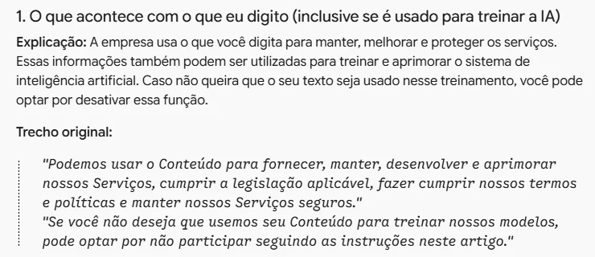
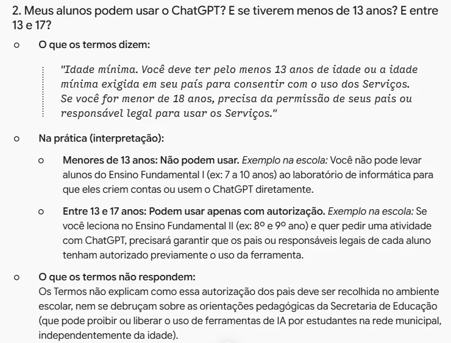

Entender os termos de uso
Peça ao Gemini um resumo dos termos do ChatGPT, entenda o que eles mudam para você e seus alunos e confira no original o que importa
Podemos usar o Conteúdo para fornecer, manter, desenvolver e aprimorar nossos Serviços, cumprir a legislação aplicável, fazer cumprir nossos termos e políticas e manter nossos Serviços seguros. […] Se você não deseja que usemos seu Conteúdo para treinar nossos modelos, pode optar por não participar seguindo as instruções neste artigo.
O que você digitaPode ser usado para treinar a IA, a não ser que você desligue.
IdadeA partir de 13 anos. Abaixo de 18, só com permissão dos pais.
Texto geradoÉ seu, mas outra pessoa pode receber um parecido.
Termos de Uso
Em vigor a partir de: 1º de janeiro de 2026
Estes Termos de Uso se aplicam ao seu uso do ChatGPT, DALL·E e outros serviços da OpenAI para indivíduos, juntamente com quaisquer aplicativos de software e sites associados (em conjunto, “Serviços”). Estes Termos constituem um acordo entre você e a OpenAI OpCo, LLC, uma empresa de Delaware, e incluem nossos Termos de Serviço e disposições importantes para a resolução de disputas por meio de arbitragem. Ao utilizar nossos Serviços, você concorda com estes Termos.
Idade mínima. Você deve ter pelo menos 13 anos de idade ou a idade mínima exigida em seu país para consentir com o uso dos Serviços. Se você for menor de 18 anos, precisa da permissão de seus pais ou responsável legal para usar os Serviços.
Registro. Para se cadastrar e usar nossos Serviços, você deve fornecer informações precisas e completas. Você não pode compartilhar suas credenciais de conta nem disponibilizar sua conta para terceiros e é responsável por todas as atividades que ocorrerem em sua conta.
Mais cerca de 3.300 palavras
Leia antes de aceitar
- Os termos de uso são um contrato. A primeira frase avisa: ao usar o serviço, você concorda com ele, mesmo sem ter lido.
- É lá que está escrito o que a empresa pode fazer com o que você digita, quem pode ter conta e quem responde por um erro.
- Ninguém lê porque é longo e jurídico. É aí que a IA ajuda: ela resume e traduz, e você confere o que importa.
Termos de Uso
Em vigor a partir de: 1º de janeiro de 2026
Agradecemos por usar a OpenAI!
Estes Termos de Uso se aplicam ao seu uso do ChatGPT, DALL·E e outros serviços da OpenAI para indivíduos, juntamente com quaisquer aplicativos de software e sites associados (em conjunto, “Serviços”). […]
Se você reside no Espaço Econômico Europeu, na Suíça ou no Reino Unido, seu uso dos Serviços é regido por estes termos.
Ctrl + A seleciona tudo · Ctrl + C copia
Copie os termos e anote a data
- Abra a página oficial dos termos, no site da OpenAI, a empresa do ChatGPT.
- Anote a data que aparece no topo. Termos mudam: o que você vai ler vale para esta versão.
- Copie o texto inteiro (Ctrl + A, Ctrl + C). Colar só o link não basta: a IA pode não abrir a página e responder de memória.

Abra o Gemini
- No computador ou Chromebook, com a conta @educa (institucional). O escudo ao lado da caixa de texto confirma.
- Os termos são um texto público, sem dado de ninguém. Mesmo assim, use a conta de trabalho: é o hábito que protege nos dias em que o texto não for público.
- Comece uma conversa nova, só para os termos.
Sou professora da rede pública municipal e não tenho formação em Direito. Abaixo estão os Termos de Uso do ChatGPT, copiados do site oficial da OpenAI (versão em vigor a partir de 1º de janeiro de 2026). Faça um resumo em linguagem simples, organizado nestes temas: 1. O que acontece com o que eu digito (inclusive se é usado para treinar a IA) 2. Idade mínima para usar 3. De quem é o texto que a IA gera 4. Erros nas respostas: quem responde por eles 5. O que é proibido fazer 6. Cancelamento, encerramento da conta e mudanças nos termos Para cada tema: - explique em até três frases curtas, sem palavras jurídicas; - copie entre aspas o trecho original em que você se baseou, para eu conferir. Regras: use só o texto abaixo. Não invente o que não está escrito. Se um tema não aparecer nos termos, diga "Não está nos termos". Nesta etapa, não dê opinião nem conselho: só o que o texto diz. TERMOS: [cole aqui o texto completo dos termos]
Peça o resumo por tema
- Os temas dizem à IA o que você quer saber. Sem eles, ela resume o que achar importante, e não o que importa para você.
- "Copie o trecho entre aspas": é o que permite conferir depois. Resumo sem trecho é para acreditar; com trecho, é para checar.
- Troque a última linha pelos termos que você copiou (Ctrl + V). Para pular linha sem enviar: Shift + Enter.

Leia o resumo
- Cada tema vem com a explicação e o trecho original logo abaixo. Leia os dois juntos.
- No primeiro tema, o ponto central: o que você digita pode ser usado para treinar os modelos da empresa, a não ser que você desligue essa opção.
- Compare com o rodapé do Gemini institucional: "suas conversas não são usadas para aprimorar nossos modelos". É a diferença entre conta pessoal e conta da rede.
Agora explique o que esses mesmos termos significam na prática para mim, professora de escola pública municipal no Brasil, que trabalha com crianças. Responda a estas perguntas: 1. Posso colar a redação de um aluno, com o nome dele, para pedir uma correção? 2. Meus alunos podem usar o ChatGPT? E se tiverem menos de 13 anos? E entre 13 e 17? 3. O texto que o ChatGPT gerar é meu? Posso usar num material e dizer que fui eu que escrevi? 4. Se a resposta tiver um erro e eu levar para a turma, de quem é a responsabilidade? 5. Posso usar o ChatGPT para decidir algo sobre um aluno, como nota ou encaminhamento? 6. Se eu criar a conta com o meu e-mail da prefeitura, muda alguma coisa? 7. Como faço para que o que eu digito não seja usado para treinar os modelos? Para cada pergunta, responda em três partes: - O que os termos dizem: o trecho original entre aspas. - Na prática: o que isso significa para mim, com um exemplo concreto da escola. - O que os termos não respondem: quando a resposta depende de outra regra (a LGPD, as orientações da Secretaria de Educação) ou de outro documento. Separe com clareza o que está escrito do que é interpretação sua. Não invente: se os termos não tratarem do assunto, diga que não tratam.
Pergunte o que muda para você
- Envie na mesma conversa: a IA ainda tem os termos à mão e não precisa recebê-los de novo.
- Perguntas do seu dia a dia rendem mais que "explique os termos". Troque ou acrescente as suas dúvidas.
- As três partes separam o que está escrito do que é interpretação da IA. É na interpretação que ela mais pode errar.

Leia o que muda na prática
- Aluno com menos de 13 anos não pode usar. Entre 13 e 17, só com autorização dos responsáveis. Tarefa no ChatGPT para o fundamental 1 contraria os próprios termos.
- É na interpretação que a IA exagera. Na pergunta 6, ela disse que a TI da prefeitura "poderá ver" o seu histórico, mas isso só vale se a prefeitura contratar um plano da OpenAI.
- Os termos mandam para um artigo de ajuda o passo a passo de desligar o treinamento. O caminho está neste guia do curso.
Resposta longa pode parar no meio de uma frase. Se acontecer, escreva: "continue de onde parou".
Nosso uso de conteúdo. Podemos usar o Conteúdo para fornecer, manter, desenvolver e aprimorar nossos Serviços, cumprir a legislação aplicável, fazer cumprir nossos termos e políticas e manter nossos Serviços seguros.
Cancelar participação. Se você não deseja que usemos seu Conteúdo para treinar nossos modelos, pode optar por não participar seguindo as instruções neste artigo. Observe que, em alguns casos, isso pode limitar a capacidade de nossos Serviços de atender melhor à sua necessidade específica.
Precisão. A inteligência artificial e a aprendizagem automática são campos de estudo em rápida evolução. […]
Confira no original
- Escolha os dois ou três pontos que mais pesam para você: idade, treinamento, decisões sobre alunos.
- Na página dos termos, aperte Ctrl + F e busque uma palavra do trecho que a IA citou. Leia o parágrafo inteiro, não só a frase.
- Confira se a citação é igual ao original e se a explicação não diz mais, nem menos, do que o texto.
- Foi assim que achamos uma omissão: o Gemini disse que mudanças são avisadas com 30 dias e deixou de fora a frase seguinte: as demais valem assim que publicadas.
Se a citação não aparecer na página, a IA errou ou reescreveu o trecho. Vale o que está no original.
Veja os termos traduzidos
- Interativo: toque em um tema para ver o trecho original e o que ele quer dizer.
- Em dez minutos, um contrato de cerca de 3.500 palavras virou sete pontos que você sabe explicar a um colega.
- Guarde o resumo com a data da versão (1º de janeiro de 2026). Quando os termos mudarem, repita o processo.
A IA resume e traduz, mas pode errar ou generalizar. Antes de repassar a alguém, confira no texto original.